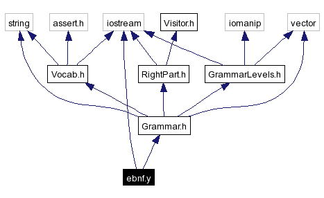

ebnf.y File Reference
This is the bison source for a parser that reads grammar definitions.
More...
#include <iostream>
#include "Grammar.h"
Include dependency graph for ebnf.y:

|
Functions |
| else | setRightPart ($3) |
| void | yyerror (const char *s) |
| | Report a syntax error in the input grammar file.
|
Variables |
| rule | __pad0__ |
| rightpart | __pad1__ |
| concatrightpart | __pad2__ |
| simplerightpart | __pad3__ |
| char * | yytext |
| | The current input lexeme; maintained by the scanner.
|
| int | yylineno |
| | The current input line number; maintained by the scanner.
|
Detailed Description
This is the bison source for a parser that reads grammar definitions.
We assume the input is in bison/yacc format, and try to parse grammar defintitions, basically building up RightPart objects, and then adding these as the definition of the appropriate non-terminal.
The scanner has laready added the terminals and non-terminals to the grammar, so there is relatively little work to do here.
We actually allow some EBNF constructs here, with [] for option, and {} for repeats (Kleene closure).
Function Documentation
| else setRightPart |
( |
$ |
3 |
) |
|
|
| void yyerror |
( |
const char * |
s |
) |
|
|
|
|
Report a syntax error in the input grammar file.
|
Variable Documentation
|
|
The current input line number; maintained by the scanner.
|
|
|
The current input lexeme; maintained by the scanner.
|
Generated on Sat Jul 9 14:10:51 2005 for SynQ by
 1.3.5
1.3.5